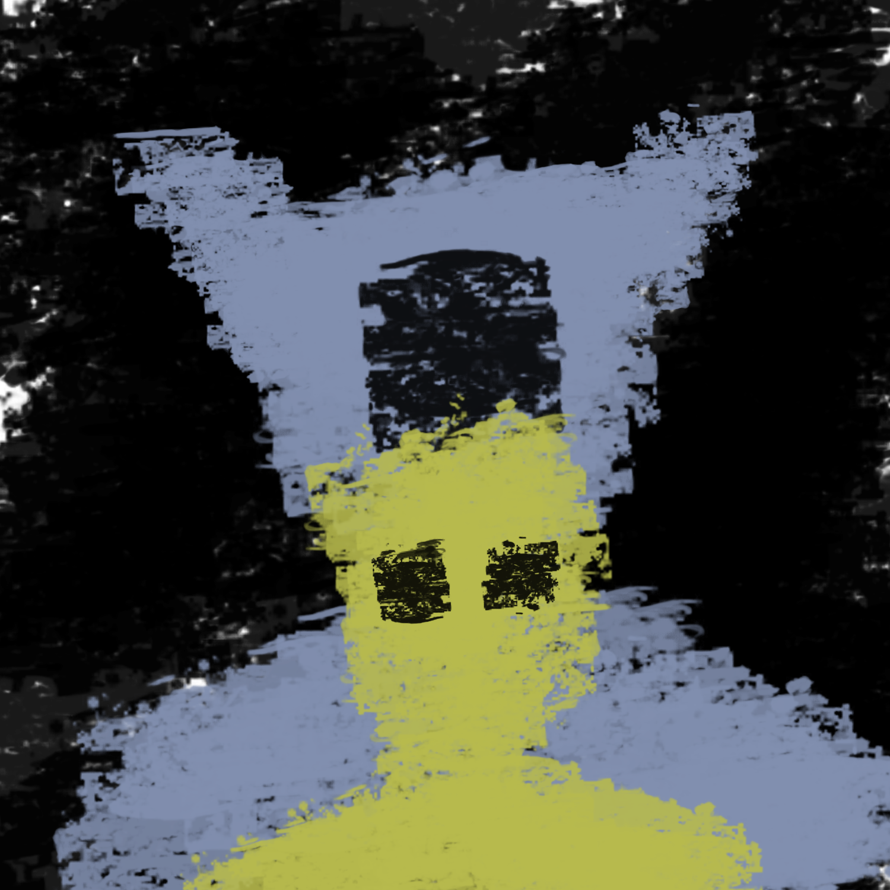

*You are drawing to pass the time. You know that at 6 O'Clock you are given the opportunity to call someone for 10 minutes, and that prospect alone is motivating you. You are growing sick and tired of this facility, and feel that it is counter intuitive. They are brainwashing you, trying to institutionalize you, and ensure that you are normal by their standards. All of their strides are regressive and you can feel the Blue Demon growing stronger. You eat lunch and watch the clock. It finally strikes 6. The staff members shout :
"Time to make your calls! You have 10 minutes, weirdos"*